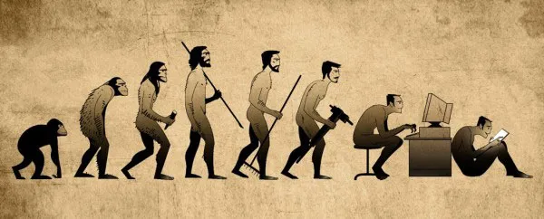
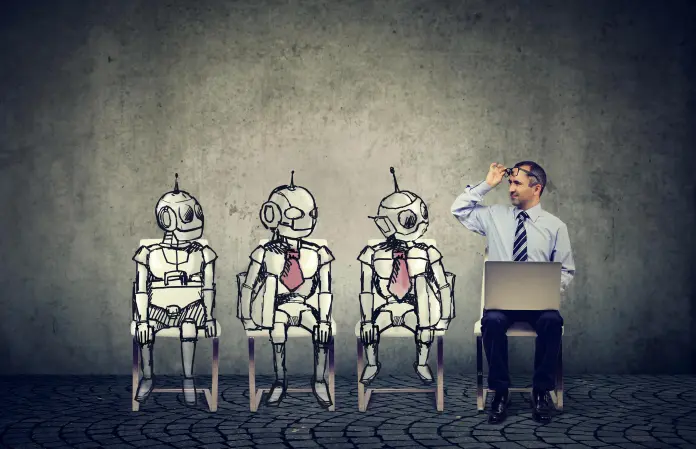
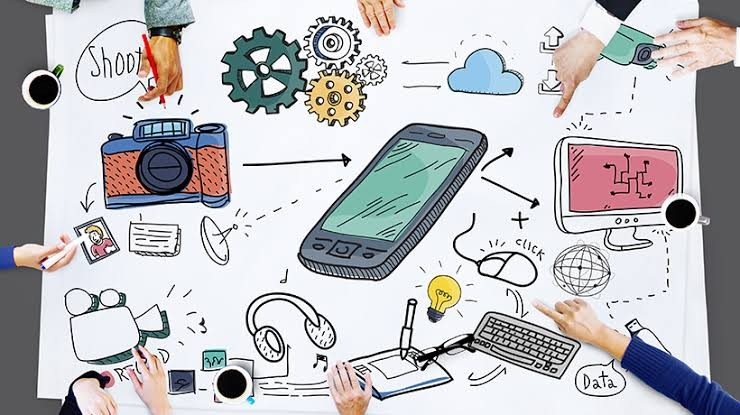
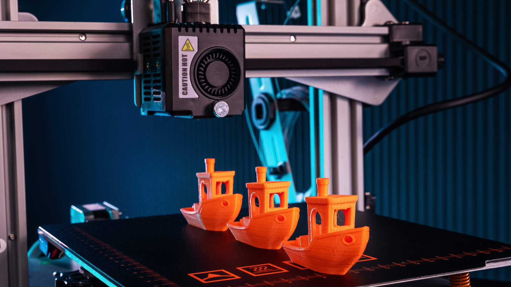

Positive and Negative Impacts of Technology on Our Daily Lives :
Technology has both positive and negative impacts on our daily Life. On the positive side, technology has helped
societies raise productivity, inclusivity of services, and improve overall well-being. On the negative side,
technology has led to mass-made products, with social media being the most often blamed for misinformation,
hate speech, and harassment on the one hand, and leaving people isolated and depressed on the other. It’s
important to note that technology is equally capable of making lives easier and harder, and it pretty much
depends on how we use it.
Positive Impacts of Technology on Society:

Improved Communication:
Technology has made it easier than ever to connect with people all over the world. With the rise of
social media and messaging apps, we can now communicate with friends, family, and colleagues in
real-time, regardless of where they are located. This has helped to break down barriers and bring people
closer together.
Access to Information:
The internet has made it possible to search for and find information on virtually any topic.
Additionally, technology has made it possible for people to access education and training, no matter
where they live. This has helped to democratize knowledge and make it more accessible to everyone..
Medical Advancements:
With the help of technology, doctors and researchers have made significant strides in treating and
preventing diseases. Technology has made it possible for medical professionals to access patient records
and communicate with other healthcare providers, which has improved the quality of care for patients.
This has helped to save countless lives and improve the overall health of society.
Negative Impacts of Technology on Society:

Job Loss:
As machines and robots become more advanced, they are capable of performing tasks that were previously
done by humans. This can lead to job loss and economic instability for those who are displaced. It is
important for society to find ways to retrain and reskill workers so that they can adapt to the changing
job market.
Cyberbullying:
Social media and other online platforms have made it easier for people to bully and harass others. This
can have a devastating impact on the mental health and well-being of those who are targeted. It is
important for society to find ways to combat cyberbullying and create a safer online environment for
everyone.
Technology Addiction:
With the rise of technology, there are growing concerns about privacy and data security. Companies and
governments have access to vast amounts of personal data, which can be used for nefarious purposes. It
is important for society to find ways to protect personal data and ensure that it is not misused.
The Future of Technology in Society:

The future of technology in society is both exciting and uncertain. On the one hand, technology has the
potential to solve some of the world's most pressing problems, such as climate change, poverty, and disease.
On the other hand, there are concerns about the impact of technology on jobs, privacy, and social
inequality. It is up to society to find ways to harness the power of technology for good while mitigating
its negative impacts. This will require collaboration between governments, businesses, and individuals to
ensure that technology is used in a responsible and ethical manner.
Impact Of Technology While Selling Printers

Technology has revolutionized the way printers are sold. One of the most significant impacts of technology on
the printer sales industry is the use of Big data. Sales organizations can now manage prospecting, a
critical step in the sales process, by using analytics and customer data models to identify potential
customers and predict which leads from B2C or B2B lead generation efforts are likely to become clients.
Another impact of technology is digitalization. Print businesses need to stop seeing digitalization
of
channels as competition and start using them to increase their customer reach and contribute to the bottom
lines of business. 3D printing has enabled the creation of prototypes and models, which can be used
to
showcase the printer's capabilities and features. Online Marketplaces have made it easier for
customers
to compare prices and features of different printers, making it easier for them to make informed decisions.
Finally, Mobile apps have made it easier for customers to order printers, track their orders, and
receive notifications about new products and promotions.
In addition to these, Artificial Intelligence has also played a significant role in the
printer sales industry. AI-powered chatbots can help customers with their queries and provide them with
personalized recommendations based on their needs and preferences. AI can also be used to analyze customer
data and identify patterns that can help businesses improve their sales processes and customer experience.
In summary, technology has had a profound impact on the printer sales industry, enabling businesses to
streamline their sales processes, reach more customers, and create engaging marketing campaigns. It’s
important for businesses to keep up with the latest technological trends to stay competitive in today’s
market.
| Aspect |
Advantages |
Disadvantages |
| Printing Speed |
Faster printing times improve efficiency. |
High-speed technology may be costlier. |
| Print Quality |
Advanced printing technologies enhance output quality. |
Initial setup costs for high-quality printing can be expensive. |
| Connectivity |
Wireless and network connectivity provide convenience. |
Dependency on stable networks; potential security concerns. |
| Cost Efficiency |
Modern technologies may lead to cost savings over time. |
Initial investment in advanced printers can be high. |
| Environmental Impact |
Energy-efficient technologies contribute to sustainability. |
Disposal of outdated technology may pose environmental challenges. |
Overall Conclusion
In conclusion, technology has profoundly shaped our world, offering both positive and negative impacts that
are especially evident in the realm of selling printers. On the positive side, technological advancements
have ushered in a new era of efficiency and connectivity, enhancing various aspects of our lives. In the
context of printers, these advancements translate into sophisticated and user-friendly devices, fostering
seamless integration into modern work environments. Wireless printing and innovative features have elevated
user experiences, making printers more versatile and convenient.
However, the rapid pace of technological evolution has brought about its own set of challenges. The negative
impact of technology, such as concerns about electronic waste, environmental implications, and security
vulnerabilities, underscores the need for responsible innovation. Printers, like many other devices,
contribute to the growing issue of e-waste, emphasizing the importance of eco-friendly manufacturing and
disposal practices. Additionally, the connectivity of printers to networks raises cybersecurity concerns
that demand vigilant attention.